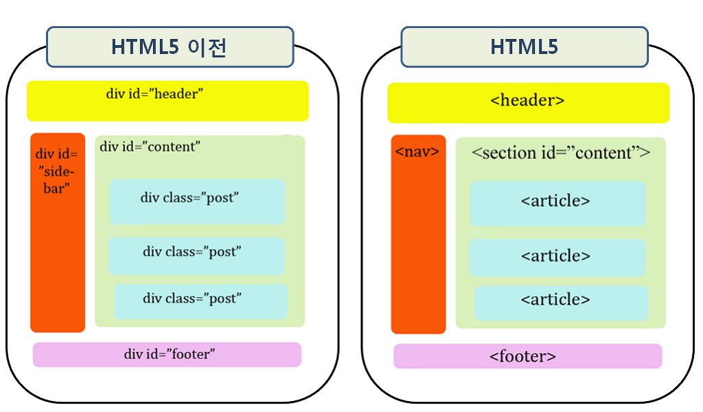

HTML
웹표준/웹접근성/웹호환성
시멘틱 테그
시멘틱(semantic)은 "의미의, 의미론적인"이라는 뜻입니다. HTML5에 도입된 시맨틱 태그는 모든 사람들이 이름만 보고 의미를 전달할 수 있습니다. 사람들뿐만 아니라 컴퓨터도 HTML 요소의 의미를 명확히 해석하고 그 데이터를 활용할 수 있어 웹이 실현될 수 있습니다. 시멘틱 태그의 장점으로는 웹 접근성과 코드 가독성이 좋아지고 코드와 데이터의 재사용성이 높아집니다.
종류
| 태그 | 설명 |
|---|---|
| <header> | header 태그는 머리글, 제목과 같은 내용을 표현합니다. 문서에 상단에 위치합니다. |
| <nav> | nav 태그는 네이게이션, 목차, 리스트 등 다른 페이지로의 이동을 위한 링크 공간을 위주로 표현합니다. |
| <aside> | aside 태그는 좌측과 우측 사이드 위치의 공간을 의미하며, 본문 외에 부수적인 내용을 주로 표현합니다. |
| <main> | main 태그는 문서의 주요 콘텐츠를 나타냅니다. 사이드 바, 탐색 링크, 로고, 검색 양식, 저작권 등 반복되는 컨텐츠를 포함시키면 안 됩니다. 한 페이지에서 한번만 사용 가능합니다. |
| <section> | section 태그는 주제별 그룹의 콘텐츠 섹션을 나타낼 때 사용합니다. |
| <article> | article 태그는 뉴스 기사나 블로그 글과 같이 독립적으로 배포 또는 재사용할 수 있는 문서를 표현합니다. |
| <footer> | footer 태그는 일반적으로 섹션의 작성자에 대한 정보, 저작권 데이터 또는 관련 문서에 대한 링크를 포합합니다. 웹문서 하단에 위치합니다. |
| <figure> | figure 태그는 일러스트, 다이어그램, 사진 등과 같은 독립적 콘텐츠를 정의합니다. |
| <figcaption> | figcaption 태그는 부모 요소인 figure가 포함하는 콘텐츠를 설명할 때 사용합니다. |
| <mark> | mark 태그는 문서의 특정 부분을 강조할 때 사용합니다. |
| <time> | time 태그는 시간을 표현할 때 사용합니다. |
HTML5에서 없어진 태그
| 태그 | 설명 | 대체 수단 |
|---|---|---|
| <applet> | 자바 애플릿 삽입 | embed/object 요소 사용 |
| <acronym> | 약어나 이니셜 표시 | abbr 요소 사용 |
| <dir> | 디렉토리 내용 표시 | ul 요소 사용 |
| <frame> | 프레임 | iframe과 CSS를 이용하거나 서버 사이트로 컨텐츠 결합 |
| <frameset> | 프레임 세트 | iframe과 CSS를 이용하거나 서버 사이트로 컨텐츠 결합 |
| <noframes> | 프레임에 대응하지 않는 브라우저를 위한 컨텐츠 | iframe과 CSS를 이용하거나 서버 사이드로 컨텐츠 결합 |
| <isindex> | 서버로 송신하는 텍스트 입력란 | form과 텍스트 필드의 조합 |
| <listing, xmp> | 내용 그대로 출력 | pre 요소나 code 요소를 사용 |
| <noembed> | embed를 사용할 수 없을 때 대체 요소 | 폴백이 필요하다면 object 요소 사용 |
| <plaintext> | 내용 그대로 출력 | MIME 타입 “text/plain”을 사용 |
| <rb> | 루비 대상 문자열을 지정 | 루비 대상 문자열은 ruby 요소 안에 직접 기술 |
| <basefont> | 기본 폰트 지정 | CSS 사용 |
| <big> | 텍스트 사이즈를 크게 함 | CSS 사용 |
| <blink> | 문자를 점멸 | CSS 사용 |
| <center> | 내용을 가운데 정렬함 | CSS 사용 |
| <font> | 폰트 지정 | CSS 사용 |
| <marquee> | 문자를 스크롤 | CSS 사용 |
| <s> | 취소선 | CSS 사용 |
| <spacer> | 스페이스 삽입 | CSS 사용 |
| <strike> | 취소선 | CSS 사용 |
| <tt> | 글꼴을 같은 폭으로 표시 | CSS 사용 |
| <u> | 텍스트에 밑줄을 그음 | CSS 사용 |
| <bgsound> | 배경음 삽입 | audio 요소를 대신 사용 |
HTML5에서 의미가 변경된 태그
| 태그 | 변경 전 | 변경 후 |
|---|---|---|
| <a> | href="#" 또는 href="javascript:;"로 지정해야 널 링크로 사용할 수 있음 | href 속성 없이 사용해도 널 링크로 사용할 수 있음 |
| <b> | 텍스트를 진하게 표시 | 텍스트를 진하게 표시할 뿐 아니라, 제품명이나 요약문서의 키워드처럼 특별하게 중요하지는 않지만 진하게 표시하려고 할때 사용 |
| <hr> | 가로줄을 표시할 때 사용 | 단락 단위로 주제를 바꾸려고 할 때 사용 |
| <i> | 텍스트를 기울어지게 표시 | 텍스트를 기울어지게 표시할 뿐 아니라, 중요한 정보가 들어있지 않은 주변 콘텐츠로부터 텍스트를 따로 표시할 때 사용 |
| <menu> | 목록과 메뉴를 정의할 때 사용 | 실제 문서 메뉴 정보를 제공하는데 사용 |
| <small> | 작은 글자로 표시 | 세부 주석이나 법적 인쇄문서에서 작은 인쇄 정보를 표시할 때 사용 |
| <strong> | 글자를 강조할 때 사용 | 단순히 진하게 표시하는 것보다 중요한 정보를 표시할 때 사용 |